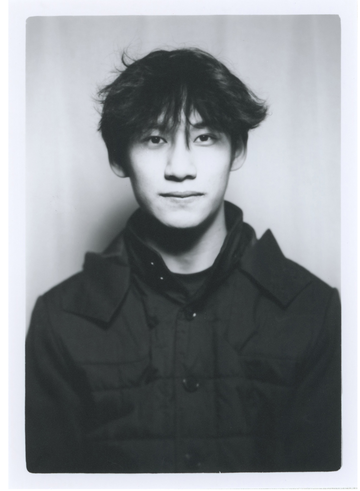

Antonio Chen (b. 2000s, Taiwan) is a Taiwanese multidisciplinary designer and Olympic fencer. He is the first male Taiwanese foil fencer to qualify for the Olympics in 36 years, marking a historic return since 1988.
Currently studying at the Rhode Island School of Design (RISD), Chen maintains his athletic career alongside his studies, traveling internationally for competitions on a near-monthly basis. His practice spans typography, identity systems, and digital environments, often capturing movement as a central visual language—translating the rhythm, speed, and flow of sport into forms that are minimal, tactile, and expressive.
His work and athletic career have been featured in Vogue, GQ, Marie Claire, Bella, TaiwanPlus, and Men's Uno, and he has been named to Dazed100.